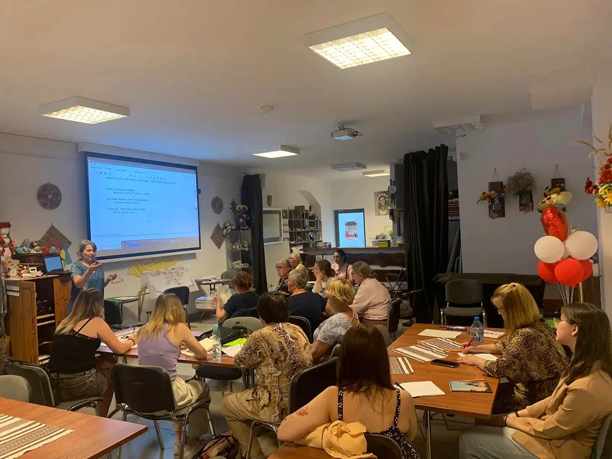
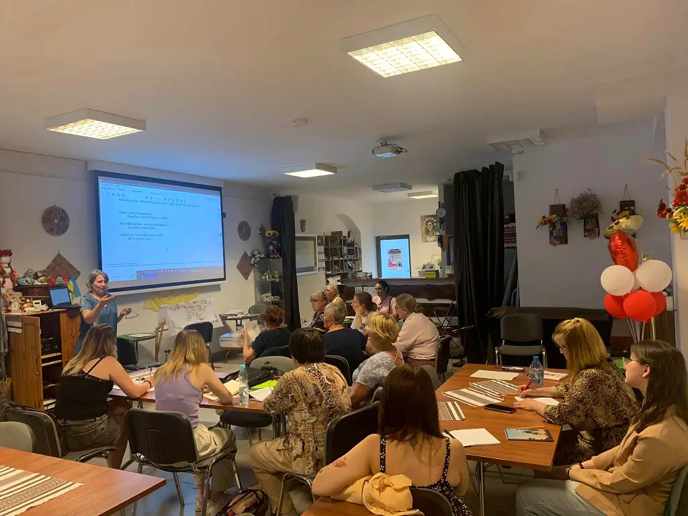

Szkoła językowa działa w formule otwartej, co oznacza, że w każdej chwili będzie można do niego dołączyć. Bariera językowa stanowi wysoką poprzeczkę w integracji osób z Ukrainy z nowym środowiskiem, ale jak wynika z raportów międzynarodowych organizacji zajmujących się imigrantami i uchodźcami wynika, że wsparcie językowe jest niezwykle ważne w procesie integracji i asymilacji nowych obywateli. Poprzez organizację zajęć językowych chcemy wesprzeć włączanie uczestników w społeczność polską, zależy nam na tym, by poczuli, że oswajają otaczającą ich rzeczywistość i byli jak najmniej zagubieni w obcym kraju.
Facylitację spotkań powierzamy osobie, Ukraince, która ma kilkuletnie doświadczenie w prowadzeniu zajęć z języka polskiego, ale też wieloletnie doświadczenie życia w Polsce, wie w jakich sytuacjach najczęściej znajdują się osoby, które przybywają do Polski jakiego słownictwa potrzebują, by móc sobie poradzić.
Szkoła językowa działać będzie w formule otwartej, co oznacza, że w każdej chwili będzie można do niego dołączyć.
Zajęcia odbywają się w każdy czwartek o godzinie 17:00.
 
